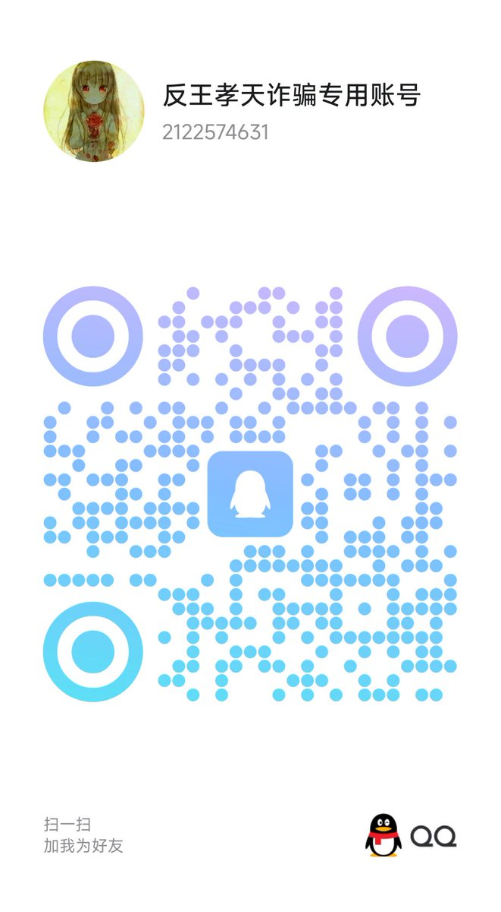
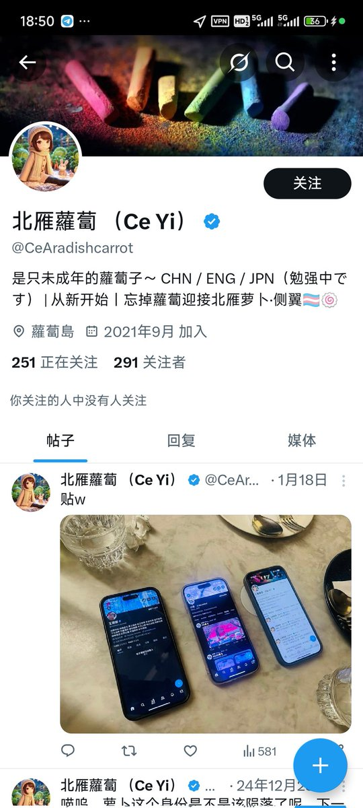

请大家全力转发本推文！
内蒙古自治区包头市青山区乌素图派出所，拒绝受理被王孝天诈骗金钱的受害者的报警，并且在受害当事人多次前往派出所要求报案回执时，拒绝出示受案通知书/立案通知书/不立案通知书！
受骗人16周岁，《刑事诉讼法》 和公安规定：任何单位和个人（包括未成年人）发现犯罪事实或犯罪嫌疑人，都有权报案。公安机关应当接受，并出具《受案回执》。
未成年人作为受害人，可以自行报案。派出所不能以“无家长陪同”为由完全拒绝受理（这属于推诿）。
如果是诈骗等财产案件，16岁已具备一定民事行为能力，报案权不受限。
被王孝天诈骗660元，当地派出所百般推辞，用各种理由不出示纸质材料，我已要求当事人坚持录音录像并且投诉！

内蒙古自治区包头市青山区乌素图派出所，拒绝受理被王孝天诈骗金钱的受害者的报警，并且在受害当事人多次前往派出所要求报案回执时，拒绝出示受案通知书/立案通知书/不立案通知书！
受骗人16周岁，《刑事诉讼法》 和公安规定：任何单位和个人（包括未成年人）发现犯罪事实或犯罪嫌疑人，都有权报案。公安机关应当接受，并出具《受案回执》。
未成年人作为受害人，可以自行报案。派出所不能以“无家长陪同”为由完全拒绝受理（这属于推诿）。
如果是诈骗等财产案件，16岁已具备一定民事行为能力，报案权不受限。
被王孝天诈骗660元，当地派出所百般推辞，用各种理由不出示纸质材料，我已要求当事人坚持录音录像并且投诉！


我们全力请求并希望大家尽可能在多个平台转发本文章并且尽可能的扩大该文章的影响力！让更多的受骗人看到这个文章，联系到更多的受骗人，预防更多的受骗人因为被诈骗而自杀！ https://t.co/wYol4B693T